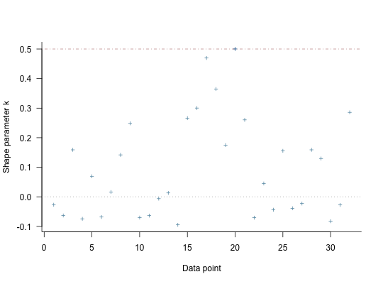

For models fit using MCMC, compute approximate leave-one-out cross-validation
(LOO, LOOIC) or, less preferably, the Widely Applicable Information Criterion
(WAIC) using the loo package. Exact \(K\)-fold
cross-validation is also available. Compare two or more models using the
compare_models function. Note: these functions are not
guaranteed to work properly unless the data argument was specified
when the model was fit.
# S3 method for stanreg loo(x, ..., k_threshold = NULL) # S3 method for stanreg waic(x, ...) kfold(x, K = 10, save_fits = FALSE) compare_models(..., loos = list())
| x | A fitted model object returned by one of the
rstanarm modeling functions. See |
|---|---|
| ... | For the |
| k_threshold | Threshold for flagging estimates of the Pareto shape
parameters \(k\) estimated by |
| K | For |
| save_fits | If |
| loos | For |
The loo and waic methods return an object of class
'loo'. See the Value section in loo and
waic (from the loo package) for details on the
structure of these objects.
kfold returns an object with has classes 'kfold' and 'loo'
that has a similar structure as the objects returned by the loo and
waic methods.
compare_models returns a vector or matrix with class
'compare.loo'. See the Comparing models section below for more
details.
The loo method for stanreg objects
provides an interface to the loo package for
approximate leave-one-out cross-validation (LOO). The LOO Information
Criterion (LOOIC) has the same purpose as the Akaike Information Criterion
(AIC) that is used by frequentists. Both are intended to estimate the
expected log predictive density (ELPD) for a new dataset. However, the AIC
ignores priors and assumes that the posterior distribution is multivariate
normal, whereas the functions from the loo package do not make this
distributional assumption and integrate over uncertainty in the parameters.
This only assumes that any one observation can be omitted without having a
major effect on the posterior distribution, which can be judged using the
diagnostic plot provided by the plot.loo method and the
warnings provided by the print.loo method (see the
How to Use the rstanarm Package vignette for an example of this
process).
loo gives warnings (k_threshold)k_threshold argument to the loo method for rstanarm
models is provided as a possible remedy when the diagnostics reveal
problems stemming from the posterior's sensitivity to particular
observations. Warnings about Pareto \(k\) estimates indicate observations
for which the approximation to LOO is problematic (this is described in
detail in Vehtari, Gelman, and Gabry (2017) and the
loo package documentation). The
k_threshold argument can be used to set the \(k\) value above
which an observation is flagged. If k_threshold is not NULL
and there are \(J\) observations with \(k\) estimates above
k_threshold then when loo is called it will refit the
original model \(J\) times, each time leaving out one of the \(J\)
problematic observations. The pointwise contributions of these observations
to the total ELPD are then computed directly and substituted for the
previous estimates from these \(J\) observations that are stored in the
object created by loo.
Note: in the warning messages issued by loo about large
Pareto \(k\) estimates we recommend setting k_threshold to at
least \(0.7\). There is a theoretical reason, explained in Vehtari,
Gelman, and Gabry (2017), for setting the threshold to the stricter value
of \(0.5\), but in practice they find that errors in the LOO
approximation start to increase non-negligibly when \(k > 0.7\).
The kfold function performs exact \(K\)-fold
cross-validation. First the data are randomly partitioned into \(K\)
subsets of equal (or as close to equal as possible) size. Then the model is
refit \(K\) times, each time leaving out one of the K subsets. If
\(K\) is equal to the total number of observations in the data then
\(K\)-fold cross-validation is equivalent to exact leave-one-out
cross-validation (to which loo is an efficient approximation). The
compare_models function is also compatible with the objects returned
by kfold.
compare_models is a wrapper around the
compare function in the loo package. Before
calling compare, compare_models performs some extra checks to
make sure the rstanarm models are suitable for comparison. These
extra checks include verifying that all models to be compared were fit
using the same outcome variable and likelihood family.
If exactly two models are being compared then compare_models returns
a vector containing the difference in expected log predictive density
(ELPD) between the models and the standard error of that difference (the
documentation for compare has additional details about
the calculation of the standard error of the difference). The difference in
ELPD will be negative if the expected out-of-sample predictive accuracy of
the first model is higher. If the difference is be positive then the second
model is preferred.
If more than two models are being compared then compare_models
returns a matrix with one row per model. This matrix summarizes the objects
and arranges them in descending order according to expected out-of-sample
predictive accuracy. That is, the first row of the matrix will be
for the model with the largest ELPD (smallest LOOIC).
Vehtari, A., Gelman, A., and Gabry, J. (2017). Practical Bayesian model evaluation using leave-one-out cross-validation and WAIC. Statistics and Computing. 27(5), 1413--1432. doi:10.1007/s11222-016-9696-4. arXiv preprint: http://arxiv.org/abs/1507.04544/
The various rstanarm vignettes for more examples of
using loo and compare_models.
loo-package (in particular the PSIS-LOO
section) for details on the computations implemented by the loo
package and the interpretation of the Pareto \(k\) estimates displayed
when using the plot.loo method.
log_lik.stanreg to directly access the pointwise
log-likelihood matrix.
#> #> SAMPLING FOR MODEL 'continuous' NOW (CHAIN 1). #> #> Chain 1, Iteration: 1 / 2000 [ 0%] (Warmup) #> Chain 1, Iteration: 200 / 2000 [ 10%] (Warmup) #> Chain 1, Iteration: 400 / 2000 [ 20%] (Warmup) #> Chain 1, Iteration: 600 / 2000 [ 30%] (Warmup) #> Chain 1, Iteration: 800 / 2000 [ 40%] (Warmup) #> Chain 1, Iteration: 1000 / 2000 [ 50%] (Warmup) #> Chain 1, Iteration: 1001 / 2000 [ 50%] (Sampling) #> Chain 1, Iteration: 1200 / 2000 [ 60%] (Sampling) #> Chain 1, Iteration: 1400 / 2000 [ 70%] (Sampling) #> Chain 1, Iteration: 1600 / 2000 [ 80%] (Sampling) #> Chain 1, Iteration: 1800 / 2000 [ 90%] (Sampling) #> Chain 1, Iteration: 2000 / 2000 [100%] (Sampling) #> Elapsed Time: 0.055153 seconds (Warm-up) #> 0.046944 seconds (Sampling) #> 0.102097 seconds (Total) #> #> #> SAMPLING FOR MODEL 'continuous' NOW (CHAIN 2). #> #> Chain 2, Iteration: 1 / 2000 [ 0%] (Warmup) #> Chain 2, Iteration: 200 / 2000 [ 10%] (Warmup) #> Chain 2, Iteration: 400 / 2000 [ 20%] (Warmup) #> Chain 2, Iteration: 600 / 2000 [ 30%] (Warmup) #> Chain 2, Iteration: 800 / 2000 [ 40%] (Warmup) #> Chain 2, Iteration: 1000 / 2000 [ 50%] (Warmup) #> Chain 2, Iteration: 1001 / 2000 [ 50%] (Sampling) #> Chain 2, Iteration: 1200 / 2000 [ 60%] (Sampling) #> Chain 2, Iteration: 1400 / 2000 [ 70%] (Sampling) #> Chain 2, Iteration: 1600 / 2000 [ 80%] (Sampling) #> Chain 2, Iteration: 1800 / 2000 [ 90%] (Sampling) #> Chain 2, Iteration: 2000 / 2000 [100%] (Sampling) #> Elapsed Time: 0.053974 seconds (Warm-up) #> 0.05796 seconds (Sampling) #> 0.111934 seconds (Total) #> #> #> SAMPLING FOR MODEL 'continuous' NOW (CHAIN 3). #> #> Chain 3, Iteration: 1 / 2000 [ 0%] (Warmup) #> Chain 3, Iteration: 200 / 2000 [ 10%] (Warmup) #> Chain 3, Iteration: 400 / 2000 [ 20%] (Warmup) #> Chain 3, Iteration: 600 / 2000 [ 30%] (Warmup) #> Chain 3, Iteration: 800 / 2000 [ 40%] (Warmup) #> Chain 3, Iteration: 1000 / 2000 [ 50%] (Warmup) #> Chain 3, Iteration: 1001 / 2000 [ 50%] (Sampling) #> Chain 3, Iteration: 1200 / 2000 [ 60%] (Sampling) #> Chain 3, Iteration: 1400 / 2000 [ 70%] (Sampling) #> Chain 3, Iteration: 1600 / 2000 [ 80%] (Sampling) #> Chain 3, Iteration: 1800 / 2000 [ 90%] (Sampling) #> Chain 3, Iteration: 2000 / 2000 [100%] (Sampling) #> Elapsed Time: 0.048239 seconds (Warm-up) #> 0.050106 seconds (Sampling) #> 0.098345 seconds (Total) #> #> #> SAMPLING FOR MODEL 'continuous' NOW (CHAIN 4). #> #> Chain 4, Iteration: 1 / 2000 [ 0%] (Warmup) #> Chain 4, Iteration: 200 / 2000 [ 10%] (Warmup) #> Chain 4, Iteration: 400 / 2000 [ 20%] (Warmup) #> Chain 4, Iteration: 600 / 2000 [ 30%] (Warmup) #> Chain 4, Iteration: 800 / 2000 [ 40%] (Warmup) #> Chain 4, Iteration: 1000 / 2000 [ 50%] (Warmup) #> Chain 4, Iteration: 1001 / 2000 [ 50%] (Sampling) #> Chain 4, Iteration: 1200 / 2000 [ 60%] (Sampling) #> Chain 4, Iteration: 1400 / 2000 [ 70%] (Sampling) #> Chain 4, Iteration: 1600 / 2000 [ 80%] (Sampling) #> Chain 4, Iteration: 1800 / 2000 [ 90%] (Sampling) #> Chain 4, Iteration: 2000 / 2000 [100%] (Sampling) #> Elapsed Time: 0.047125 seconds (Warm-up) #> 0.047535 seconds (Sampling) #> 0.09466 seconds (Total) #>#> #> SAMPLING FOR MODEL 'continuous' NOW (CHAIN 1). #> #> Chain 1, Iteration: 1 / 2000 [ 0%] (Warmup) #> Chain 1, Iteration: 200 / 2000 [ 10%] (Warmup) #> Chain 1, Iteration: 400 / 2000 [ 20%] (Warmup) #> Chain 1, Iteration: 600 / 2000 [ 30%] (Warmup) #> Chain 1, Iteration: 800 / 2000 [ 40%] (Warmup) #> Chain 1, Iteration: 1000 / 2000 [ 50%] (Warmup) #> Chain 1, Iteration: 1001 / 2000 [ 50%] (Sampling) #> Chain 1, Iteration: 1200 / 2000 [ 60%] (Sampling) #> Chain 1, Iteration: 1400 / 2000 [ 70%] (Sampling) #> Chain 1, Iteration: 1600 / 2000 [ 80%] (Sampling) #> Chain 1, Iteration: 1800 / 2000 [ 90%] (Sampling) #> Chain 1, Iteration: 2000 / 2000 [100%] (Sampling) #> Elapsed Time: 0.083309 seconds (Warm-up) #> 0.08201 seconds (Sampling) #> 0.165319 seconds (Total) #> #> #> SAMPLING FOR MODEL 'continuous' NOW (CHAIN 2). #> #> Chain 2, Iteration: 1 / 2000 [ 0%] (Warmup) #> Chain 2, Iteration: 200 / 2000 [ 10%] (Warmup) #> Chain 2, Iteration: 400 / 2000 [ 20%] (Warmup) #> Chain 2, Iteration: 600 / 2000 [ 30%] (Warmup) #> Chain 2, Iteration: 800 / 2000 [ 40%] (Warmup) #> Chain 2, Iteration: 1000 / 2000 [ 50%] (Warmup) #> Chain 2, Iteration: 1001 / 2000 [ 50%] (Sampling) #> Chain 2, Iteration: 1200 / 2000 [ 60%] (Sampling) #> Chain 2, Iteration: 1400 / 2000 [ 70%] (Sampling) #> Chain 2, Iteration: 1600 / 2000 [ 80%] (Sampling) #> Chain 2, Iteration: 1800 / 2000 [ 90%] (Sampling) #> Chain 2, Iteration: 2000 / 2000 [100%] (Sampling) #> Elapsed Time: 0.079826 seconds (Warm-up) #> 0.081137 seconds (Sampling) #> 0.160963 seconds (Total) #> #> #> SAMPLING FOR MODEL 'continuous' NOW (CHAIN 3). #> #> Chain 3, Iteration: 1 / 2000 [ 0%] (Warmup) #> Chain 3, Iteration: 200 / 2000 [ 10%] (Warmup) #> Chain 3, Iteration: 400 / 2000 [ 20%] (Warmup) #> Chain 3, Iteration: 600 / 2000 [ 30%] (Warmup) #> Chain 3, Iteration: 800 / 2000 [ 40%] (Warmup) #> Chain 3, Iteration: 1000 / 2000 [ 50%] (Warmup) #> Chain 3, Iteration: 1001 / 2000 [ 50%] (Sampling) #> Chain 3, Iteration: 1200 / 2000 [ 60%] (Sampling) #> Chain 3, Iteration: 1400 / 2000 [ 70%] (Sampling) #> Chain 3, Iteration: 1600 / 2000 [ 80%] (Sampling) #> Chain 3, Iteration: 1800 / 2000 [ 90%] (Sampling) #> Chain 3, Iteration: 2000 / 2000 [100%] (Sampling) #> Elapsed Time: 0.083183 seconds (Warm-up) #> 0.080826 seconds (Sampling) #> 0.164009 seconds (Total) #> #> #> SAMPLING FOR MODEL 'continuous' NOW (CHAIN 4). #> #> Chain 4, Iteration: 1 / 2000 [ 0%] (Warmup) #> Chain 4, Iteration: 200 / 2000 [ 10%] (Warmup) #> Chain 4, Iteration: 400 / 2000 [ 20%] (Warmup) #> Chain 4, Iteration: 600 / 2000 [ 30%] (Warmup) #> Chain 4, Iteration: 800 / 2000 [ 40%] (Warmup) #> Chain 4, Iteration: 1000 / 2000 [ 50%] (Warmup) #> Chain 4, Iteration: 1001 / 2000 [ 50%] (Sampling) #> Chain 4, Iteration: 1200 / 2000 [ 60%] (Sampling) #> Chain 4, Iteration: 1400 / 2000 [ 70%] (Sampling) #> Chain 4, Iteration: 1600 / 2000 [ 80%] (Sampling) #> Chain 4, Iteration: 1800 / 2000 [ 90%] (Sampling) #> Chain 4, Iteration: 2000 / 2000 [100%] (Sampling) #> Elapsed Time: 0.076507 seconds (Warm-up) #> 0.080569 seconds (Sampling) #> 0.157076 seconds (Total) #># compare on LOOIC (loo1 <- loo(fit1, cores = 2))#> Computed from 4000 by 32 log-likelihood matrix #> #> Estimate SE #> elpd_loo -83.3 4.2 #> p_loo 3.0 1.1 #> looic 166.6 8.4 #> #> All Pareto k estimates are good (k < 0.5) #> See help('pareto-k-diagnostic') for details.loo2 <- loo(fit2, cores = 2) plot(loo2)# when comparing exactly two models, the reported 'elpd_diff' will be # positive if the expected predictive accuracy for the second model is higher compare_models(loo1, loo2) # or compare_models(loos = list(loo1, loo2))#> elpd_diff se #> 4.8 2.7# when comparing three or more models they are ordered by expected # predictive accuracy fit3 <- stan_glm(mpg ~ ., data = mtcars)#> #> SAMPLING FOR MODEL 'continuous' NOW (CHAIN 1). #> #> Chain 1, Iteration: 1 / 2000 [ 0%] (Warmup) #> Chain 1, Iteration: 200 / 2000 [ 10%] (Warmup) #> Chain 1, Iteration: 400 / 2000 [ 20%] (Warmup) #> Chain 1, Iteration: 600 / 2000 [ 30%] (Warmup) #> Chain 1, Iteration: 800 / 2000 [ 40%] (Warmup) #> Chain 1, Iteration: 1000 / 2000 [ 50%] (Warmup) #> Chain 1, Iteration: 1001 / 2000 [ 50%] (Sampling) #> Chain 1, Iteration: 1200 / 2000 [ 60%] (Sampling) #> Chain 1, Iteration: 1400 / 2000 [ 70%] (Sampling) #> Chain 1, Iteration: 1600 / 2000 [ 80%] (Sampling) #> Chain 1, Iteration: 1800 / 2000 [ 90%] (Sampling) #> Chain 1, Iteration: 2000 / 2000 [100%] (Sampling) #> Elapsed Time: 0.413893 seconds (Warm-up) #> 0.42144 seconds (Sampling) #> 0.835333 seconds (Total) #> #> #> SAMPLING FOR MODEL 'continuous' NOW (CHAIN 2). #> #> Chain 2, Iteration: 1 / 2000 [ 0%] (Warmup) #> Chain 2, Iteration: 200 / 2000 [ 10%] (Warmup) #> Chain 2, Iteration: 400 / 2000 [ 20%] (Warmup) #> Chain 2, Iteration: 600 / 2000 [ 30%] (Warmup) #> Chain 2, Iteration: 800 / 2000 [ 40%] (Warmup) #> Chain 2, Iteration: 1000 / 2000 [ 50%] (Warmup) #> Chain 2, Iteration: 1001 / 2000 [ 50%] (Sampling) #> Chain 2, Iteration: 1200 / 2000 [ 60%] (Sampling) #> Chain 2, Iteration: 1400 / 2000 [ 70%] (Sampling) #> Chain 2, Iteration: 1600 / 2000 [ 80%] (Sampling) #> Chain 2, Iteration: 1800 / 2000 [ 90%] (Sampling) #> Chain 2, Iteration: 2000 / 2000 [100%] (Sampling) #> Elapsed Time: 0.38088 seconds (Warm-up) #> 0.320301 seconds (Sampling) #> 0.701181 seconds (Total) #> #> #> SAMPLING FOR MODEL 'continuous' NOW (CHAIN 3). #> #> Chain 3, Iteration: 1 / 2000 [ 0%] (Warmup) #> Chain 3, Iteration: 200 / 2000 [ 10%] (Warmup) #> Chain 3, Iteration: 400 / 2000 [ 20%] (Warmup) #> Chain 3, Iteration: 600 / 2000 [ 30%] (Warmup) #> Chain 3, Iteration: 800 / 2000 [ 40%] (Warmup) #> Chain 3, Iteration: 1000 / 2000 [ 50%] (Warmup) #> Chain 3, Iteration: 1001 / 2000 [ 50%] (Sampling) #> Chain 3, Iteration: 1200 / 2000 [ 60%] (Sampling) #> Chain 3, Iteration: 1400 / 2000 [ 70%] (Sampling) #> Chain 3, Iteration: 1600 / 2000 [ 80%] (Sampling) #> Chain 3, Iteration: 1800 / 2000 [ 90%] (Sampling) #> Chain 3, Iteration: 2000 / 2000 [100%] (Sampling) #> Elapsed Time: 0.452214 seconds (Warm-up) #> 0.355756 seconds (Sampling) #> 0.80797 seconds (Total) #> #> #> SAMPLING FOR MODEL 'continuous' NOW (CHAIN 4). #> #> Chain 4, Iteration: 1 / 2000 [ 0%] (Warmup) #> Chain 4, Iteration: 200 / 2000 [ 10%] (Warmup) #> Chain 4, Iteration: 400 / 2000 [ 20%] (Warmup) #> Chain 4, Iteration: 600 / 2000 [ 30%] (Warmup) #> Chain 4, Iteration: 800 / 2000 [ 40%] (Warmup) #> Chain 4, Iteration: 1000 / 2000 [ 50%] (Warmup) #> Chain 4, Iteration: 1001 / 2000 [ 50%] (Sampling) #> Chain 4, Iteration: 1200 / 2000 [ 60%] (Sampling) #> Chain 4, Iteration: 1400 / 2000 [ 70%] (Sampling) #> Chain 4, Iteration: 1600 / 2000 [ 80%] (Sampling) #> Chain 4, Iteration: 1800 / 2000 [ 90%] (Sampling) #> Chain 4, Iteration: 2000 / 2000 [100%] (Sampling) #> Elapsed Time: 0.362083 seconds (Warm-up) #> 0.302227 seconds (Sampling) #> 0.66431 seconds (Total) #>loo3 <- loo(fit3, k_threshold = 0.7, cores = 2)#> #>#> #>#> #> Elapsed Time: 0.37747 seconds (Warm-up) #> 0.407982 seconds (Sampling) #> 0.785452 seconds (Total) #> #> #> Elapsed Time: 0.527518 seconds (Warm-up) #> 0.35083 seconds (Sampling) #> 0.878348 seconds (Total) #> #> #> Elapsed Time: 0.467379 seconds (Warm-up) #> 0.39898 seconds (Sampling) #> 0.866359 seconds (Total) #> #> #> Elapsed Time: 0.395039 seconds (Warm-up) #> 0.313997 seconds (Sampling) #> 0.709036 seconds (Total) #>#> #>#> #> Elapsed Time: 0.387258 seconds (Warm-up) #> 0.373508 seconds (Sampling) #> 0.760766 seconds (Total) #> #> #> Elapsed Time: 0.43534 seconds (Warm-up) #> 0.452875 seconds (Sampling) #> 0.888215 seconds (Total) #> #> #> Elapsed Time: 0.38559 seconds (Warm-up) #> 0.380572 seconds (Sampling) #> 0.766162 seconds (Total) #> #> #> Elapsed Time: 0.36229 seconds (Warm-up) #> 0.416377 seconds (Sampling) #> 0.778667 seconds (Total) #>#> #>#> #> Elapsed Time: 0.426474 seconds (Warm-up) #> 0.385032 seconds (Sampling) #> 0.811506 seconds (Total) #> #> #> Elapsed Time: 0.449152 seconds (Warm-up) #> 0.40222 seconds (Sampling) #> 0.851372 seconds (Total) #> #> #> Elapsed Time: 0.422556 seconds (Warm-up) #> 0.484446 seconds (Sampling) #> 0.907002 seconds (Total) #> #> #> Elapsed Time: 0.400893 seconds (Warm-up) #> 0.479176 seconds (Sampling) #> 0.880069 seconds (Total) #>#> #>#> #> Elapsed Time: 0.412516 seconds (Warm-up) #> 0.464297 seconds (Sampling) #> 0.876813 seconds (Total) #> #> #> Elapsed Time: 0.373728 seconds (Warm-up) #> 0.351956 seconds (Sampling) #> 0.725684 seconds (Total) #> #> #> Elapsed Time: 0.368027 seconds (Warm-up) #> 0.480749 seconds (Sampling) #> 0.848776 seconds (Total) #> #> #> Elapsed Time: 0.412825 seconds (Warm-up) #> 0.35158 seconds (Sampling) #> 0.764405 seconds (Total) #>compare_models(loo1, loo2, loo3)#> looic se_looic elpd_loo se_elpd_loo p_loo se_p_loo #> fit2 156.9 9.0 -78.5 4.5 4.0 1.2 #> fit1 166.6 8.4 -83.3 4.2 3.0 1.1 #> fit3 170.2 7.0 -85.1 3.5 10.9 2.1# 10-fold cross-validation (kfold1 <- kfold(fit1, K = 10))#>#> #> Elapsed Time: 0.051334 seconds (Warm-up) #> 0.048697 seconds (Sampling) #> 0.100031 seconds (Total) #> #> #> Elapsed Time: 0.059149 seconds (Warm-up) #> 0.044946 seconds (Sampling) #> 0.104095 seconds (Total) #> #> #> Elapsed Time: 0.049406 seconds (Warm-up) #> 0.054209 seconds (Sampling) #> 0.103615 seconds (Total) #> #> #> Elapsed Time: 0.051184 seconds (Warm-up) #> 0.04831 seconds (Sampling) #> 0.099494 seconds (Total) #>#>#> #> Elapsed Time: 0.060339 seconds (Warm-up) #> 0.048211 seconds (Sampling) #> 0.10855 seconds (Total) #> #> #> Elapsed Time: 0.059596 seconds (Warm-up) #> 0.047933 seconds (Sampling) #> 0.107529 seconds (Total) #> #> #> Elapsed Time: 0.05946 seconds (Warm-up) #> 0.049086 seconds (Sampling) #> 0.108546 seconds (Total) #> #> #> Elapsed Time: 0.051708 seconds (Warm-up) #> 0.051374 seconds (Sampling) #> 0.103082 seconds (Total) #>#>#> #> Elapsed Time: 0.06152 seconds (Warm-up) #> 0.052618 seconds (Sampling) #> 0.114138 seconds (Total) #> #> #> Elapsed Time: 0.050875 seconds (Warm-up) #> 0.056528 seconds (Sampling) #> 0.107403 seconds (Total) #> #> #> Elapsed Time: 0.054391 seconds (Warm-up) #> 0.052019 seconds (Sampling) #> 0.10641 seconds (Total) #> #> #> Elapsed Time: 0.057439 seconds (Warm-up) #> 0.050747 seconds (Sampling) #> 0.108186 seconds (Total) #>#>#> #> Elapsed Time: 0.057547 seconds (Warm-up) #> 0.050657 seconds (Sampling) #> 0.108204 seconds (Total) #> #> #> Elapsed Time: 0.051891 seconds (Warm-up) #> 0.051754 seconds (Sampling) #> 0.103645 seconds (Total) #> #> #> Elapsed Time: 0.05206 seconds (Warm-up) #> 0.050567 seconds (Sampling) #> 0.102627 seconds (Total) #> #> #> Elapsed Time: 0.049767 seconds (Warm-up) #> 0.051842 seconds (Sampling) #> 0.101609 seconds (Total) #>#>#> #> Elapsed Time: 0.050728 seconds (Warm-up) #> 0.047442 seconds (Sampling) #> 0.09817 seconds (Total) #> #> #> Elapsed Time: 0.05136 seconds (Warm-up) #> 0.054952 seconds (Sampling) #> 0.106312 seconds (Total) #> #> #> Elapsed Time: 0.055755 seconds (Warm-up) #> 0.047256 seconds (Sampling) #> 0.103011 seconds (Total) #> #> #> Elapsed Time: 0.054792 seconds (Warm-up) #> 0.045628 seconds (Sampling) #> 0.10042 seconds (Total) #>#>#> #> Elapsed Time: 0.046675 seconds (Warm-up) #> 0.047364 seconds (Sampling) #> 0.094039 seconds (Total) #> #> #> Elapsed Time: 0.048515 seconds (Warm-up) #> 0.046203 seconds (Sampling) #> 0.094718 seconds (Total) #> #> #> Elapsed Time: 0.044011 seconds (Warm-up) #> 0.045633 seconds (Sampling) #> 0.089644 seconds (Total) #> #> #> Elapsed Time: 0.047905 seconds (Warm-up) #> 0.044123 seconds (Sampling) #> 0.092028 seconds (Total) #>#>#> #> Elapsed Time: 0.04777 seconds (Warm-up) #> 0.043808 seconds (Sampling) #> 0.091578 seconds (Total) #> #> #> Elapsed Time: 0.050696 seconds (Warm-up) #> 0.047875 seconds (Sampling) #> 0.098571 seconds (Total) #> #> #> Elapsed Time: 0.050001 seconds (Warm-up) #> 0.045359 seconds (Sampling) #> 0.09536 seconds (Total) #> #> #> Elapsed Time: 0.050345 seconds (Warm-up) #> 0.049402 seconds (Sampling) #> 0.099747 seconds (Total) #>#>#> #> Elapsed Time: 0.050114 seconds (Warm-up) #> 0.045274 seconds (Sampling) #> 0.095388 seconds (Total) #> #> #> Elapsed Time: 0.051079 seconds (Warm-up) #> 0.04527 seconds (Sampling) #> 0.096349 seconds (Total) #> #> #> Elapsed Time: 0.05664 seconds (Warm-up) #> 0.044859 seconds (Sampling) #> 0.101499 seconds (Total) #> #> #> Elapsed Time: 0.051201 seconds (Warm-up) #> 0.045852 seconds (Sampling) #> 0.097053 seconds (Total) #>#>#> #> Elapsed Time: 0.05073 seconds (Warm-up) #> 0.04535 seconds (Sampling) #> 0.09608 seconds (Total) #> #> #> Elapsed Time: 0.050923 seconds (Warm-up) #> 0.044845 seconds (Sampling) #> 0.095768 seconds (Total) #> #> #> Elapsed Time: 0.052586 seconds (Warm-up) #> 0.046223 seconds (Sampling) #> 0.098809 seconds (Total) #> #> #> Elapsed Time: 0.04853 seconds (Warm-up) #> 0.047372 seconds (Sampling) #> 0.095902 seconds (Total) #>#>#> #> Elapsed Time: 0.048885 seconds (Warm-up) #> 0.042792 seconds (Sampling) #> 0.091677 seconds (Total) #> #> #> Elapsed Time: 0.048738 seconds (Warm-up) #> 0.047786 seconds (Sampling) #> 0.096524 seconds (Total) #> #> #> Elapsed Time: 0.053072 seconds (Warm-up) #> 0.046211 seconds (Sampling) #> 0.099283 seconds (Total) #> #> #> Elapsed Time: 0.050201 seconds (Warm-up) #> 0.045273 seconds (Sampling) #> 0.095474 seconds (Total) #>#> #> 10-fold cross-validation #> #> Estimate SE #> elpd_kfold -80.3 3.2kfold2 <- kfold(fit2, K = 10)#>#> #> Elapsed Time: 0.078586 seconds (Warm-up) #> 0.085799 seconds (Sampling) #> 0.164385 seconds (Total) #> #> #> Elapsed Time: 0.073823 seconds (Warm-up) #> 0.063829 seconds (Sampling) #> 0.137652 seconds (Total) #> #> #> Elapsed Time: 0.082399 seconds (Warm-up) #> 0.074315 seconds (Sampling) #> 0.156714 seconds (Total) #> #> #> Elapsed Time: 0.08288 seconds (Warm-up) #> 0.102005 seconds (Sampling) #> 0.184885 seconds (Total) #>#>#> #> Elapsed Time: 0.097034 seconds (Warm-up) #> 0.085547 seconds (Sampling) #> 0.182581 seconds (Total) #> #> #> Elapsed Time: 0.088996 seconds (Warm-up) #> 0.068338 seconds (Sampling) #> 0.157334 seconds (Total) #> #> #> Elapsed Time: 0.078709 seconds (Warm-up) #> 0.086733 seconds (Sampling) #> 0.165442 seconds (Total) #> #> #> Elapsed Time: 0.094796 seconds (Warm-up) #> 0.084527 seconds (Sampling) #> 0.179323 seconds (Total) #>#>#> #> Elapsed Time: 0.101918 seconds (Warm-up) #> 0.083374 seconds (Sampling) #> 0.185292 seconds (Total) #> #> #> Elapsed Time: 0.083179 seconds (Warm-up) #> 0.077627 seconds (Sampling) #> 0.160806 seconds (Total) #> #> #> Elapsed Time: 0.084343 seconds (Warm-up) #> 0.08217 seconds (Sampling) #> 0.166513 seconds (Total) #> #> #> Elapsed Time: 0.076593 seconds (Warm-up) #> 0.088036 seconds (Sampling) #> 0.164629 seconds (Total) #>#>#> #> Elapsed Time: 0.081546 seconds (Warm-up) #> 0.079528 seconds (Sampling) #> 0.161074 seconds (Total) #> #> #> Elapsed Time: 0.075459 seconds (Warm-up) #> 0.078685 seconds (Sampling) #> 0.154144 seconds (Total) #> #> #> Elapsed Time: 0.079948 seconds (Warm-up) #> 0.073533 seconds (Sampling) #> 0.153481 seconds (Total) #> #> #> Elapsed Time: 0.07745 seconds (Warm-up) #> 0.07957 seconds (Sampling) #> 0.15702 seconds (Total) #>#>#> #> Elapsed Time: 0.072664 seconds (Warm-up) #> 0.073844 seconds (Sampling) #> 0.146508 seconds (Total) #> #> #> Elapsed Time: 0.088159 seconds (Warm-up) #> 0.079918 seconds (Sampling) #> 0.168077 seconds (Total) #> #> #> Elapsed Time: 0.080885 seconds (Warm-up) #> 0.081002 seconds (Sampling) #> 0.161887 seconds (Total) #> #> #> Elapsed Time: 0.076482 seconds (Warm-up) #> 0.081713 seconds (Sampling) #> 0.158195 seconds (Total) #>#>#> #> Elapsed Time: 0.072812 seconds (Warm-up) #> 0.07895 seconds (Sampling) #> 0.151762 seconds (Total) #> #> #> Elapsed Time: 0.095303 seconds (Warm-up) #> 0.09322 seconds (Sampling) #> 0.188523 seconds (Total) #> #> #> Elapsed Time: 0.091956 seconds (Warm-up) #> 0.096414 seconds (Sampling) #> 0.18837 seconds (Total) #> #> #> Elapsed Time: 0.090138 seconds (Warm-up) #> 0.08907 seconds (Sampling) #> 0.179208 seconds (Total) #>#>#> #> Elapsed Time: 0.087332 seconds (Warm-up) #> 0.085864 seconds (Sampling) #> 0.173196 seconds (Total) #> #> #> Elapsed Time: 0.085822 seconds (Warm-up) #> 0.083215 seconds (Sampling) #> 0.169037 seconds (Total) #> #> #> Elapsed Time: 0.085686 seconds (Warm-up) #> 0.077404 seconds (Sampling) #> 0.16309 seconds (Total) #> #> #> Elapsed Time: 0.079927 seconds (Warm-up) #> 0.083469 seconds (Sampling) #> 0.163396 seconds (Total) #>#>#> #> Elapsed Time: 0.089048 seconds (Warm-up) #> 0.083345 seconds (Sampling) #> 0.172393 seconds (Total) #> #> #> Elapsed Time: 0.082905 seconds (Warm-up) #> 0.076737 seconds (Sampling) #> 0.159642 seconds (Total) #> #> #> Elapsed Time: 0.07678 seconds (Warm-up) #> 0.07394 seconds (Sampling) #> 0.15072 seconds (Total) #> #> #> Elapsed Time: 0.087423 seconds (Warm-up) #> 0.079292 seconds (Sampling) #> 0.166715 seconds (Total) #>#>#> #> Elapsed Time: 0.085536 seconds (Warm-up) #> 0.075309 seconds (Sampling) #> 0.160845 seconds (Total) #> #> #> Elapsed Time: 0.084787 seconds (Warm-up) #> 0.075343 seconds (Sampling) #> 0.16013 seconds (Total) #> #> #> Elapsed Time: 0.072694 seconds (Warm-up) #> 0.078656 seconds (Sampling) #> 0.15135 seconds (Total) #> #> #> Elapsed Time: 0.075291 seconds (Warm-up) #> 0.074733 seconds (Sampling) #> 0.150024 seconds (Total) #>#>#> #> Elapsed Time: 0.07542 seconds (Warm-up) #> 0.079927 seconds (Sampling) #> 0.155347 seconds (Total) #> #> #> Elapsed Time: 0.078877 seconds (Warm-up) #> 0.070772 seconds (Sampling) #> 0.149649 seconds (Total) #> #> #> Elapsed Time: 0.074315 seconds (Warm-up) #> 0.078338 seconds (Sampling) #> 0.152653 seconds (Total) #> #> #> Elapsed Time: 0.066999 seconds (Warm-up) #> 0.07772 seconds (Sampling) #> 0.144719 seconds (Total) #>compare_models(kfold1, kfold2)#> elpd_diff se #> 5.8 4.4